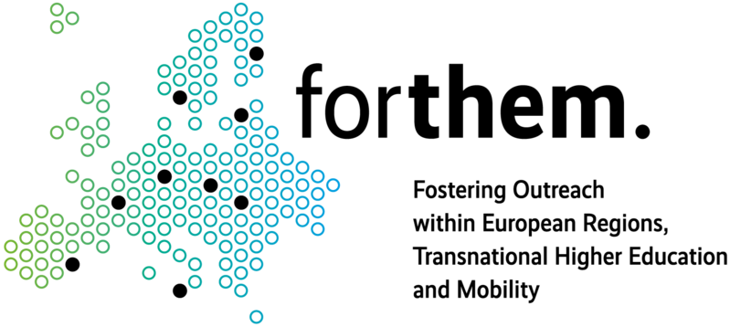

Christophe Cruz
- Professeur des universités en Informatique à l’IUT de Dijon - Département Informatique
- Membre du département COMM de l'ICB UMR CNRS 6303
- Université Bourgogne Europe


Responsabilités
- Directeur scientifique du labcom lamae
- Membre du Mission Board de l'alliance FORTHEM
- Membre du bureau Association EGC
- Membre du comité éthique métropolitain de la donnée, Dijon Métropole
-
Directeur et co-encadrement de thèses de :
Nicolas Zante - Oualid Bougzime - Hussam Ghanem - Samir Jabbar
Parcours professionnel
| Durée | Description |
|---|---|
| 2026-* | Responsable adjoint du département IA, Système numérique et cyberphysique du laboratoire ICB UMR CNRS 6303 |
| 2022-2025 | Bénéficiaire de la Prime Individuelle (RIPEC) |
| 2017-2021 | Bénéficiaire de la Prime d'Encadrement Doctoral et de Recherche A (PEDR) |
| 2013-2017 | Bénéficiaire de la Prime d'Excellence Scientifique B (PES) |
| 2013, 2017 | Qualification aux fonctions de Professeur des Universités, section CNU 27 |
| 2012 | Habilitation à Diriger des Recherches (HDR) |
| 2015-2018 | Responsable Pôle #3 - Environnements Intelligents du laboratoire Le2i |
| 2008-2015 | Responsable adjoint de l’équipe CheckSem du laboratoire Le2i |
| 2008-2015 | Responsable Transfert de technologie du laboratoire Le2i |
| 2008-2015 | Correspondant Institut Carnot ARTS pour le Le2i |
| 2005- | Maître de Conférences à l’Université de Bourgogne |
| 2004-2005 | Post-doctorat à Mayence dans l'institut de recherches appliquées i3mainz |
| 2001-2004 | Doctorat - bourse région avec l’entreprise Groupe Archimen – Active3D |
Laboratoire Interdisciplinaire Carnot Bourgogne
ICB - Laboratoire Interdisciplinaire Carnot Bourgogne
Université de Bourgogne
11 Rue Sully, Bat. ESEO
21000 Dijon, France
Bureau : n°412
IUT Dijon-Auxerre
Département Informatique
Boulevard Docteur Petitjean
BP 17867, 21078 DIJON CEDEX
Bureau : n°102
Contact
| Informations | Description |
|---|---|
| tél. labo. | +33 (0)3.80.39.38.28 |
| tél. IUT | +33 (0)3.80.39.64.54 |
| christophe.cruz@u-bourgogne.fr | |
| X | @christophe_cruz |
| Web | christophe-cruz.fr |
| ORCID | 0000-0002-5611-9479 |
| Scholar | scholar.google.fr/citations |
| HAL | cv.archives-ouvertes.fr/christophe-cruz/ |
| ACM | dl.acm.org |
| IEEE | ieeexplore.ieee.org |
| GitHub | github.com/ChristopheCruz |
| www.linkedin.com/in/christophecruz |